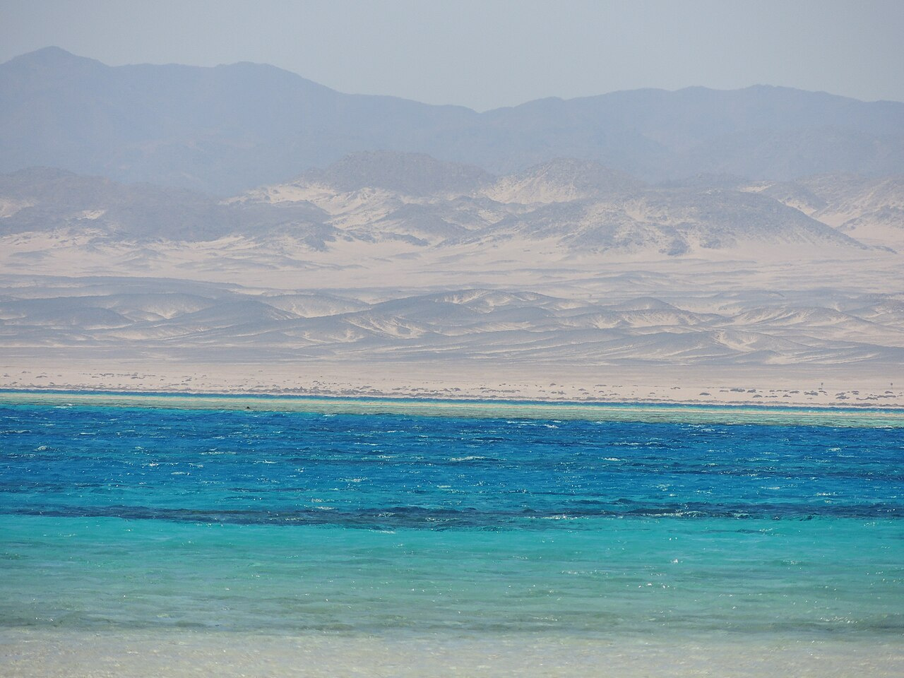
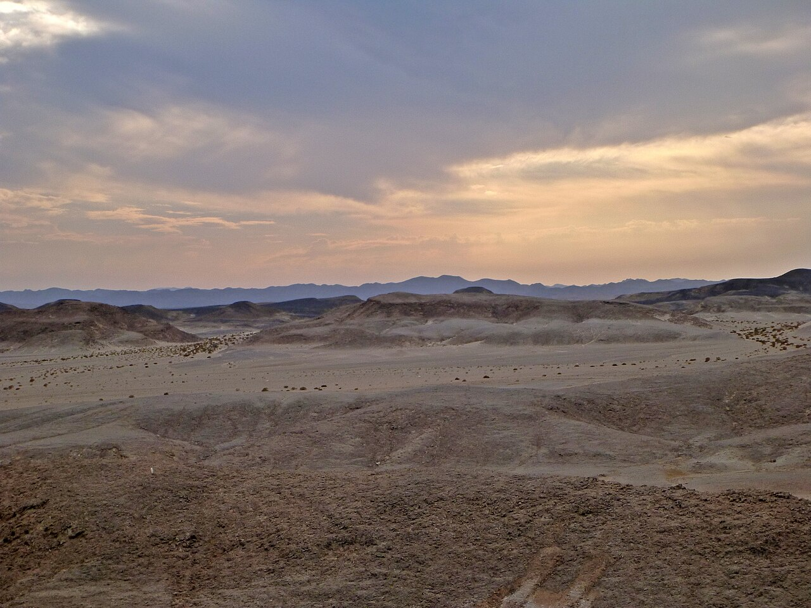
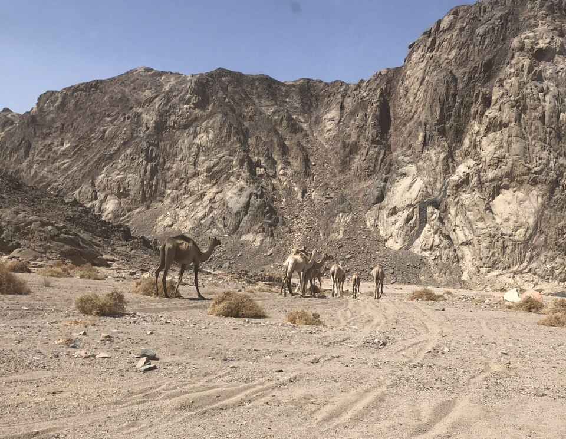
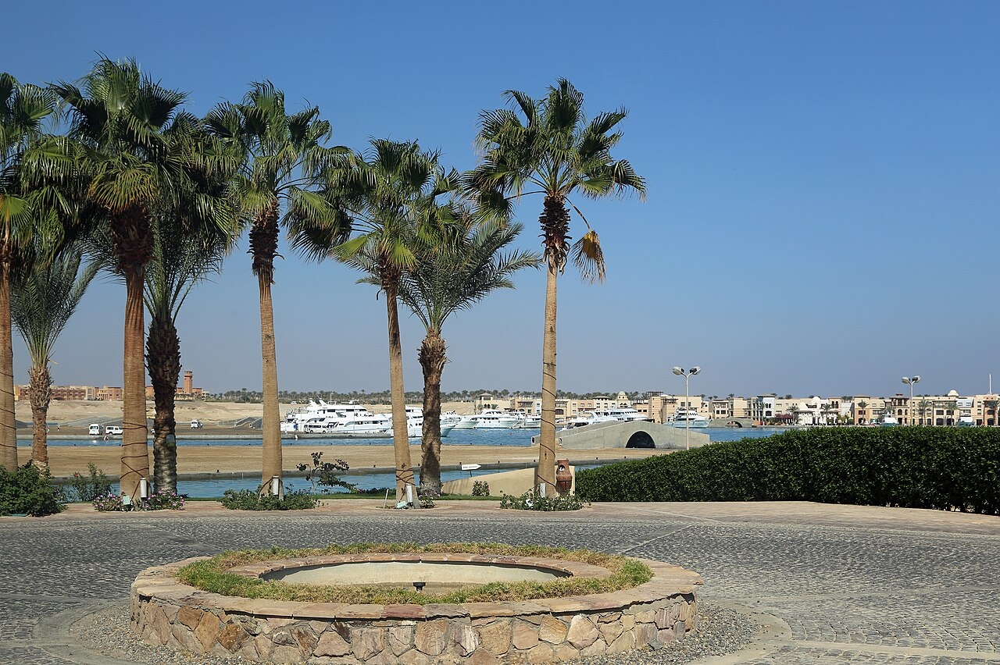

Interviste di viaggio · Egitto
Marsa Alam, un mese fra Mar Rosso e deserto
Dal quad ai cammelli, dalla marina di Port Ghalib a Sharm El Luli: Daniele racconta il mese trascorso sulla costa egiziana.
Racconto in forma di intervista, rielaborato dalle esperienze condivise da Daniele.
- Daniele
- 1 mese a Marsa Alam
- Mar Rosso e deserto

A Marsa Alam il turchese del Mar Rosso incontra le tonalità asciutte dell’entroterra. Daniele ha trascorso un mese su questa costa egiziana, tra deserto, viaggio in quad e cammelli. Port Ghalib e Sharm El Luli completano le tappe: la marina da un lato, la spiaggia dall’altro. Ne nasce un percorso che mette vicini movimento e paesaggio, seguendo due grandi presenze, il mare e la terra.
Daniele, quali luoghi hanno segnato il tuo mese a Marsa Alam?
Daniele. Ho trascorso un mese a Marsa Alam. Ci sono stati il deserto, il viaggio in quad, i cammelli, Port Ghalib e Sharm El Luli: luoghi e attività che permettono di conoscere aspetti diversi della costa egiziana. Il mare rimane una presenza costante, ma l’entroterra ha uno spazio altrettanto importante.
La particolarità della zona sta anche in questo accostamento. All’acqua luminosa del Mar Rosso si affiancano i colori della roccia e della terra arida. Le spiagge e il deserto appartengono allo stesso paesaggio, pur avendo forme e proporzioni molto diverse.
Che cosa offre il deserto oltre la costa?
Daniele. Offre spazi aperti, rilievi e tonalità che cambiano completamente la scena. La roccia e il terreno asciutto prendono il posto della riva; sotto il cielo, le distanze diventano parte del panorama. È l’altro grande ambiente di questa zona, quello che dà alla costa una cornice più ampia.
Durante il mio soggiorno il deserto ha fatto parte delle esperienze. Conoscerlo permette di affiancare alle immagini del mare quelle dell’entroterra, con una luce e una materia differenti. Il paesaggio egiziano acquista così profondità: la spiaggia rimane un richiamo, ma intorno c’è un territorio da osservare.

Come entrano il quad e i cammelli in queste giornate?
Daniele. Ho fatto un viaggio in quad durante il mese a Marsa Alam. Il percorso nel deserto aggiunge movimento alla scoperta del paesaggio e porta l’attenzione sul terreno, sulle distanze e sugli spazi dell’entroterra. È un modo diverso di vivere una destinazione spesso associata soprattutto al mare.
Anche i cammelli hanno fatto parte dell’esperienza. La loro presenza è una delle immagini tipiche di queste terre e aggiunge un altro elemento alla scoperta del deserto. Quad, animali e paesaggio si affiancano così alle tappe sul mare, rendendo le giornate diverse tra loro.

Quale atmosfera troviamo a Port Ghalib?
Daniele. A Port Ghalib la marina diventa il centro della scena. Le imbarcazioni, il lungomare e gli spazi dedicati all’accoglienza disegnano una località con una propria identità. Ristoranti, attività commerciali e strutture ricettive si affacciano su un ambiente costruito intorno al porto e al Mar Rosso.
È una tappa diversa dal deserto e dalla spiaggia. Qui il mare si incontra attraverso la vita della marina e gli spazi che la circondano. Port Ghalib aggiunge al soggiorno questo volto della costa, fatto anche di architetture e servizi. Accostarlo agli altri luoghi permette di cogliere la varietà della destinazione.

E Sharm El Luli, come completa il viaggio?
Daniele. Con la sabbia chiara e l’acqua limpida. A Sharm El Luli sono la riva, le sfumature del mare e l’orizzonte a definire il paesaggio. La spiaggia ha una bellezza immediata, riconoscibile nel rapporto tra pochi elementi: la terra, la luce e il Mar Rosso.
È una delle tappe del mio mese a Marsa Alam, insieme a Port Ghalib e alle esperienze nel deserto. Luoghi differenti mostrano il carattere di questa costa. Chi vuole continuare a seguirmi mi trova su Instagram come @daniele_pepi98; per immaginare una propria partenza, si può cominciare scegliendo quali aspetti si desidera conoscere più da vicino.
Mare, deserto o entrambi? Parla con il team Click&Viaggia delle esperienze che cerchi e concorda un appuntamento informativo per approfondire la tua idea di viaggio.
Le fotografie illustrano le destinazioni: non sono immagini del gruppo o dei soggiorni di Daniele. I racconti si basano sulle esperienze condivise dal team. Questo articolo non costituisce un’offerta di viaggio.